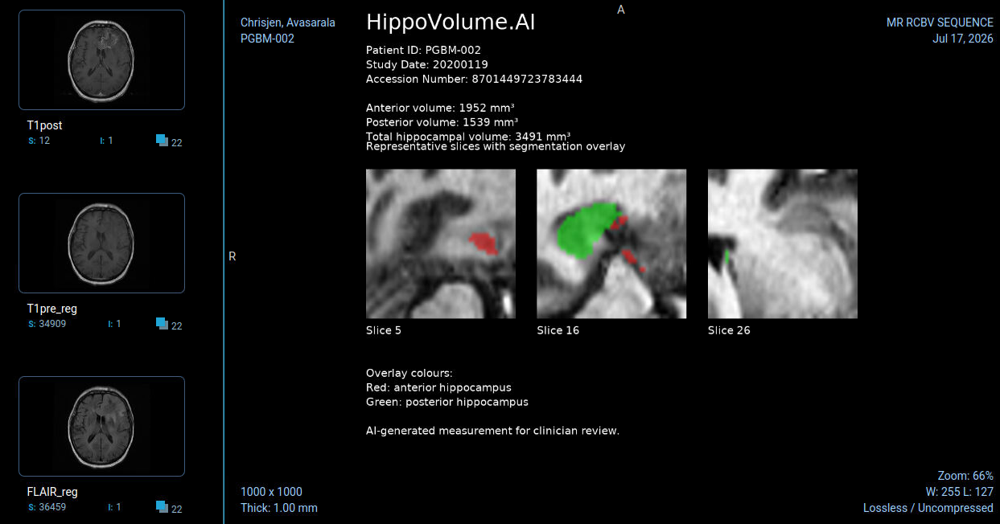

Overview
A PyTorch U-Net (Dice 0.90) wired into a simulated hospital PACS, so each incoming MRI study returns an automated volume report.
Hippocampal volume is a marker tracked in Alzheimer's progression, but measuring it by hand means tracing the structure on every slice. The goal was a system that measures it automatically and fits into the tools radiologists already use.
Key Numbers
Tools
- Python
- PyTorch
- U-Net
- NiBabel
- pydicom
- Orthanc PACS
- OHIF
- TensorBoard
Role
Individual project. Udacity AI in Healthcare Nanodegree (June – Aug 2026).

Description
- Screened 262 volumes from the Medical Segmentation Decathlon and removed 2 invalid studies, one with a labelled volume about 12 times the normal range and one whose image and mask dimensions did not match.
- Trained a U-Net to segment background, anterior hippocampus and posterior hippocampus, monitoring training and validation loss in TensorBoard.
- Evaluated on an independent test set with Dice, Jaccard, sensitivity and specificity.
- Built an inference service that receives a study from an Orthanc PACS, selects the right series, segments it and computes volumes from voxel spacing.
- Generated a DICOM report with the measurements and overlay slices and sent it back to the archive for viewing in OHIF.
- Wrote a validation plan covering intended use, ground truth, performance measurement and the conditions under which accuracy is expected to fall.
Outcome
The pipeline works end to end on test studies. These results are algorithmic validation on one dataset, not clinical validation, and the tool is intended to assist a radiologist, who reviews every measurement. The integration step taught me the most: a model only becomes useful once it fits the system clinicians already work in.